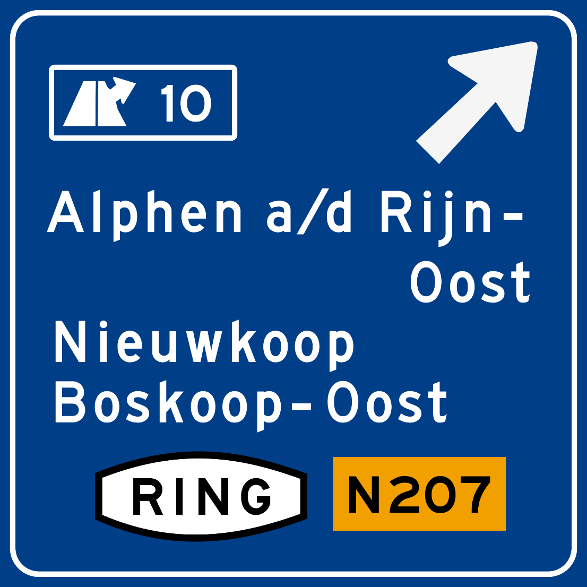
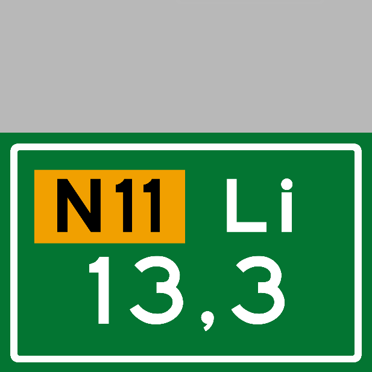
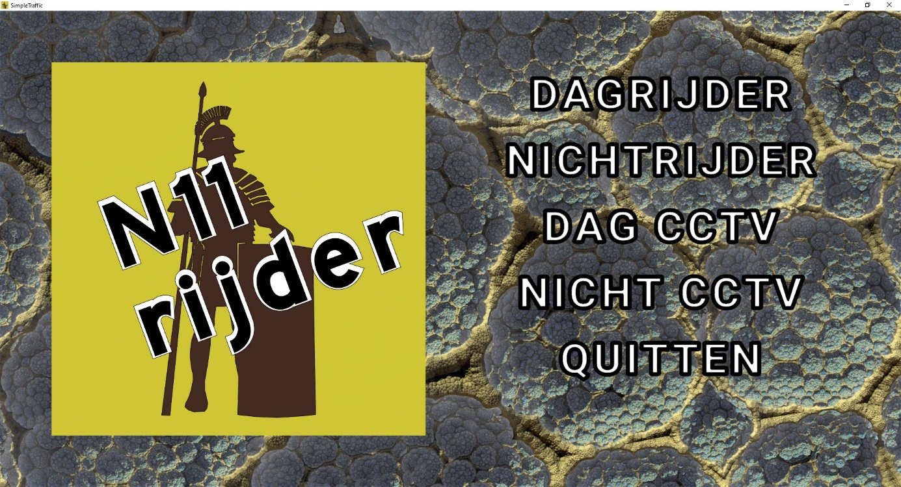
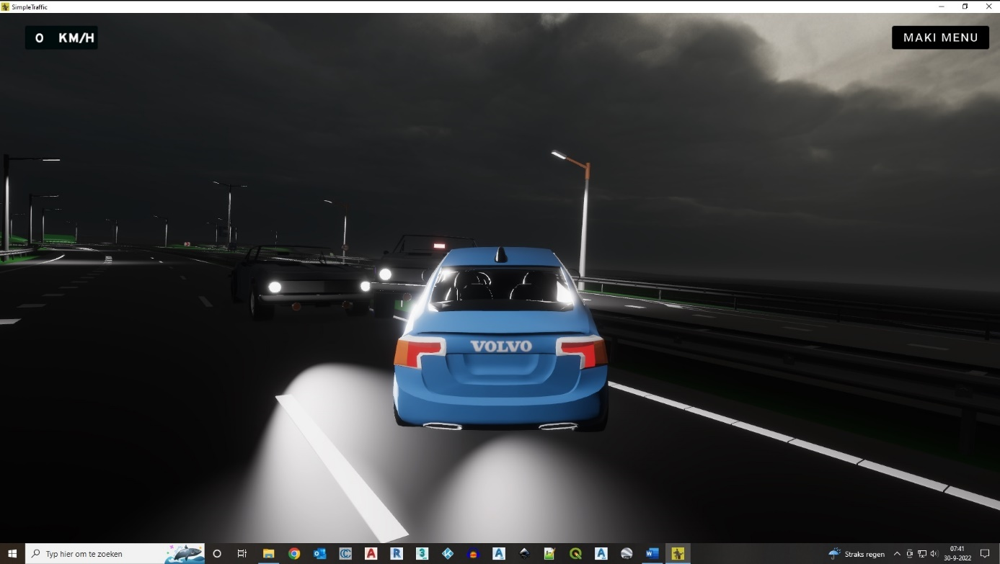
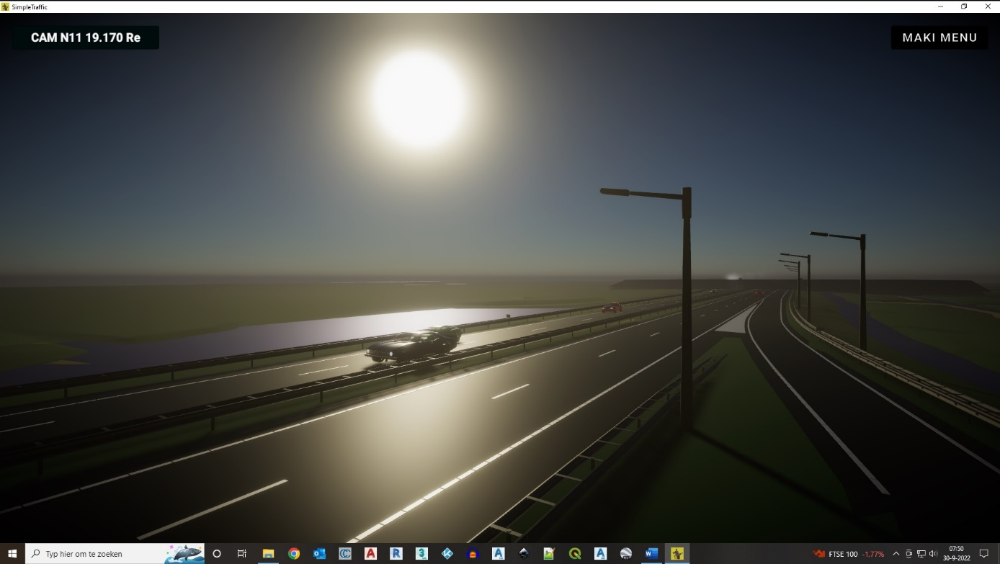

Van het ganse land kan je puntenwolken downloaden op Algemeen Hoogtebestand Nederland PDOK, dat zijn grote oppervlakten waarmee je bijna niks kan (zulke enorme bestanden). Je kan ze voorzichtig in Cloud Compare laden en dan gauw knippen die hap. Als je een gedeelte hebt geïsoleerd, kan je de wolk een beetje wieden. Meestal doe ik onderlinge afstand van 5.0 m. om de wolken enigszins bewerkbaar te houden anders blijven ze te zwaar (de punt-aantallen zijn soms astronomisch). Dan zie je al ongeveer wat het gaat worden. Meestal heb ik de autocadbestanden ook bij de hand. Ik gebruik de 3dpolylijnen uit AutoCAD bestanden om de stukken asfalt te maken (in 3d Max). Beetje uitkijken met de nulpunten, meestal wel op te vangen door als controle alles over elkaar heen te projecteren.
Met Inkscape kan je de borden in elkaar flansen.
Wat dacht je van deze serie. In totaal 160 .png `s aangemaakt in Inkscape.
Maakte ze voor een flink stuk rijksweg. Re en Li en afslagen a, b, c en d. RWS font op de computer. Heb een stuk van de N11 geknutseld kilometer 13 tot bijna 20, toch zoon zeven kilometer. Video van een minuutje.
Leuk toch? En je ben van de straat. Later heb ik alles in Unity inzichtelijk gemaakt. Je kan in een auto stappen en het stuk snelweg afrossen. Als medeweggebruikers heb ik vier verschillende kleuren auto `s gemaakt. Normaal is het beeldvulling maar nu moeten ze met je kunnen botsen enzo. Daardoor loopt het spel vast als er teveel units gebruik maken van alle 'real life physics" die je nodig hebt om te rijden in een game. Dus heel veel medeweggebruikers zijn er niet, een stuk of vijftig. Die rijden een vast tracé in een loop. Heb camera `s hangen op de punten uit de dtb (vrij toegankelijke rijkswaterstaat data). Naast de functie om te rijden bij dag en bij nacht. Heb ik ook levels gemaakt om de camera `s te bedienen. Of dag of nacht kan je schakelen over het tracé. Soms ontstaat een kettingbotsing maar niet altijd alle auto `s staan dan achter elkaar in een rij, in een gegier van banden en rook (standaard geleverd door Unity).
Het openingsscherm van het spelletje. Hangt van je werkgeheugen af, maar het is te spelen vanaf een USB-sticker.
Spectaculaire beelden vanaf de N11 bij het viaduct Alphen. Ik draai daar richting Bodegraven de snelweg op en bam.
Ben er wel een paar maanden mee bezig geweest. Als business model zal het niks worden. Maar het was gewoon geinig om alles uit te pluizen. Tutorials zoeken en janken omdat sommige lappen code in andere versies van de game engine niet meer werken. Kostelijk! Het rijden is af en toe nog wel aardig en ik zou er een hoop functionaliteit bij kunnen bouwen, maar klaar mee.